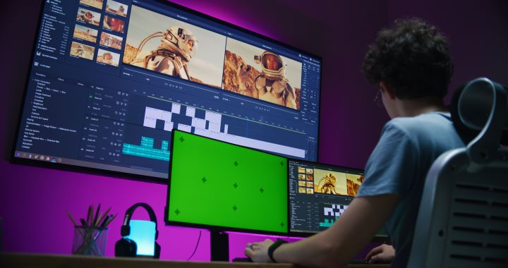

Micro-obsesiones e hiperfijaciones
Videojuegos: Puedo pasar horas investigando el lore de un videojuego, todo tipo de curiosidades y el desarrollo detrás de todo lo que involucra la animación, su programación y el sonido.
Música: Disfruto mucho escuchando música, así que he aprendido e investigado para tocar algunos instrumentos, además de indagar de vez en cuando en cómo los profesionales producen música independiente y para videojuegos.
Rol: Si alguna campaña o aventura de rol de mesa me interesa, suelo investigar bastante sobre su lore y sus reglas, aunque al final no termine jugando ninguna campaña.

Colecciones intangibles
- Cuando me despierto suelo prender mi computadora y, mientras espero a que se reinicie y abro las pestañas que suelo usar, miro redes sociales o algún video interesante que encuentre.
- Normalmente, antes de dormir, me pongo en YouTube ASMR de lluvia y música tranquila; es un hábito que me quedó, pero no sé muy bien por qué.
"Los sonidos repetitivos de la naturaleza y la baja frecuencia generan un espacio mental donde el ruido visual desaparece." — Apunte sobre diseño sonoro
Normalmente este es el tipo de video que suelo escuchar al dormir: Rain, Piano and Cello ↗
Otros sonidos agradables
- Sonidos de esculpir madera
- Sonido al escribir o dibujar a lápiz
- Sonidos del mar o del bosque
Rankings hiperespecíficos
Los tres mejores videojuegos indie:
- Neva: Un juego de plataformas y puzles de 2024 desarrollado por Nomada Studio y publicado por Devolver Digital. Narra la historia de Alba, una joven que debe viajar con su lobo Neva a través de las cuatro estaciones en un mundo corrompido por la oscuridad.
- Planet of Lana: Un juego de plataformas y puzles de 2023 desarrollado por Wishfully y publicado por Thunderful Publishing. Cuenta la historia de una joven llamada Lana y su viaje para rescatar a su hermana tras una invasión alienígena.
- Little Inferno: Un videojuego de puzles desarrollado y publicado en 2012 por la desarrolladora independiente estadounidense Tomorrow Corporation.
Clasificación actualizada en la fecha: .
↑ Volver al inicio